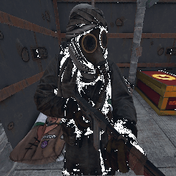
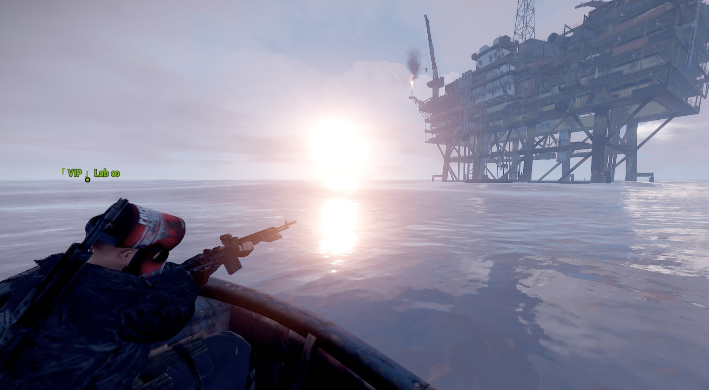

Historia:Lab es un virtuoso de la tecnología improvisada, capaz de transformar chatarra en artefactos de alta utilidad. Sus manos hábiles y mente ingeniosa han dado vida a máquinas y trampas sorprendentes que mantienen a raya a cualquier amenaza que se atreva a cruzar su camino. En su cinturón, lleva un arsenal de herramientas meticulosamente seleccionadas, listas para ser desplegadas en un instante. Pero Lab no es solo un genio de la ingeniería; también es un estratega magistral. Con una visión táctica aguda, es capaz de leer el terreno y anticipar los movimientos de sus enemigos. Ha establecido su reputación como un líder nato, reuniendo a grupos de sobrevivientes bajo su bandera y orquestando incursiones audaces contra bases enemigas. La agilidad de Lab no tiene rival. Sus movimientos son como los de un depredador en la oscuridad, silenciosos y letales. Pocos pueden igualar su habilidad en el combate cuerpo a cuerpo, donde se convierte en una fuerza implacable, incapaz de ser detenida. Aunque puede ser un enigma para algunos, aquellos que conocen a Lab reconocen su corazón valiente y su sentido inquebrantable de justicia. En un mundo donde la desconfianza es la norma, Lab se destaca como un aliado leal y un defensor incansable de los oprimidos. |

Lab es mucho más que un mero superviviente en Rust es un genio tecnológico, estratega excepcional y un protector feroz que ha dejado una marca indeleble en este desolado paisaje de desafíos y peligros. |
|---|
Travesia en la petro
Lab había escuchado rumores sobre la plataforma petrolera "Petro" y su abundancia de recursos, pero también sabía de los peligros que la rodeaban. Maximonfs estaba fascinado por la idea de revitalizar una fuente de energía que podría beneficiar a su comunidad, y Wachin Amarillo vio la oportunidad de desafiar sus habilidades de combate en un entorno único. Los tres se embarcaron en una misión de planificación intensa y preparación meticulosa. Lab trazó estrategias detalladas, aprovechando su experiencia en juegos como Rust, para enfrentar los posibles desafíos que les esperaban en la plataforma. Maximonfs diseñó herramientas y equipos especializados que les permitirían navegar por la plataforma y reparar las instalaciones petroleras. Wachin Amarillo entrenó al equipo en tácticas de sigilo y combate, asegurándose de que estuvieran preparados para enfrentar cualquier amenaza. La travesía hacia la plataforma "Petro" fue arriesgada y llena de peligros. A medida que se acercaban a su objetivo, enfrentaron tormentas marinas y ataques sorpresa de enemigos. Sin embargo, su determinación y habilidades combinadas les permitieron superar cada obstáculo en su camino. Una vez en la plataforma, Lab, Maximonfs y Wachin Amarillo trabajaron en equipo para desactivar trampas, eliminar enemigos y reparar las instalaciones petroleras dañadas. Cada uno desempeñó un papel crucial en el éxito de la misión, aprovechando sus habilidades individuales para avanzar hacia el corazón de la "Petro". Finalmente, después de enfrentar desafíos agotadores y enfrentamientos intensos, el trío logró asegurar el tesoro de la "Petro": una valiosa fuente de recursos que cambiaría la balanza a favor de su comunidad y otros supervivientes. Con su objetivo cumplido, Lab, Maximonfs y Wachin Amarillo regresaron al campamento de supervivientes como héroes. Su historia se convirtió en una inspiración para muchos, demostrando que la cooperación, la planificación estratégica y la determinación podían superar incluso los desafíos más formidables. La leyenda de su hazaña en la "Petro" perduró en el tiempo, recordando a todos que, en medio del caos y la adversidad, la unidad y la habilidad podían marcar la diferencia en la lucha por la supervivencia.